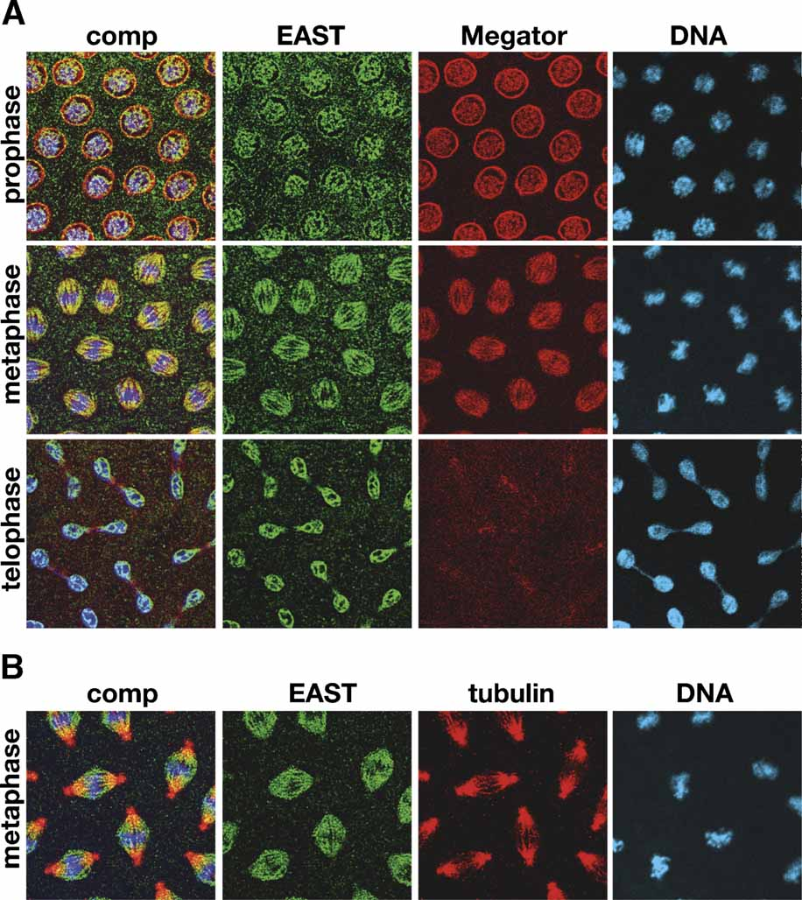

J. Cell. Biochem. Vol.95, 6 Pages: 1284-1291
Copyright © 2005 Wiley-Liss, Inc., A Wiley Company
View Normal Image View List of Images

Wiley-Liss, Inc.
Figure 4. The localization of EAST relative to the putative spindle matrix protein Megator and to tubulin during the cell cycle. A: The images are from triple labeling of EAST with mAb 5B1 (green), Megator with mAb 12F10 (red), and DNA with Hoechst (blue). The composite images (comp) are shown to the left. At prophase EAST and Megator labeling overlap in the nuclear interior whereas Megator labeling is prominent at the nuclear rim. During metaphase the composite image (comp) shows extensive overlap between EAST and Megator labeling as indicated by the predominantly yellow color. At telophase where EAST begins to redistribute back around the chromosomes Megator appears to be preferentially localized to the spindle midbody. B: The images are from triple labeling of EAST with mAb 5B1 (green), tubulin with a rat anti--tubulin mAb (red), and DNA with Hoechst (blue). The EAST antibody clearly labels a true fusiform spindle structure that is co-aligned with the microtubule spindle except for the centrosomes. The images in (A) and (B) are from confocal sections of syncytial embryonic nuclei. [Color figure can be viewed in the online issue, which is available at www.interscience.wiley.com.]